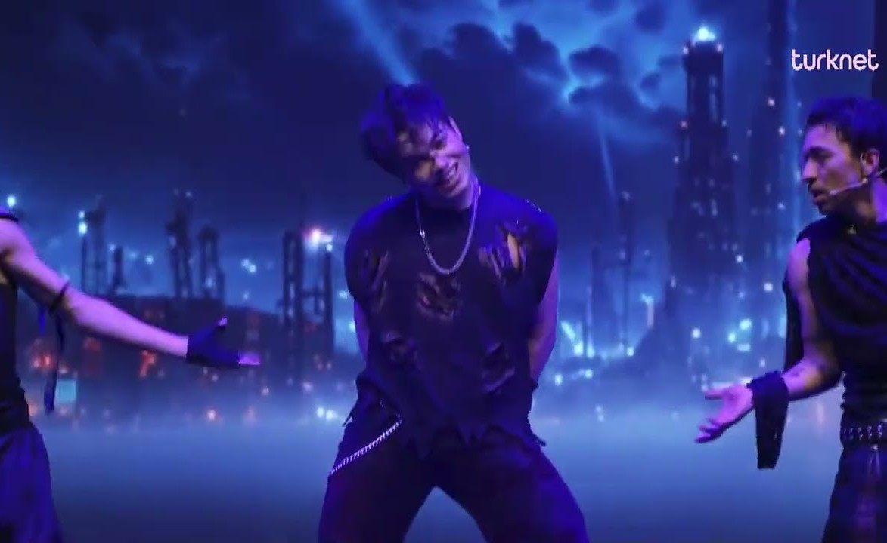
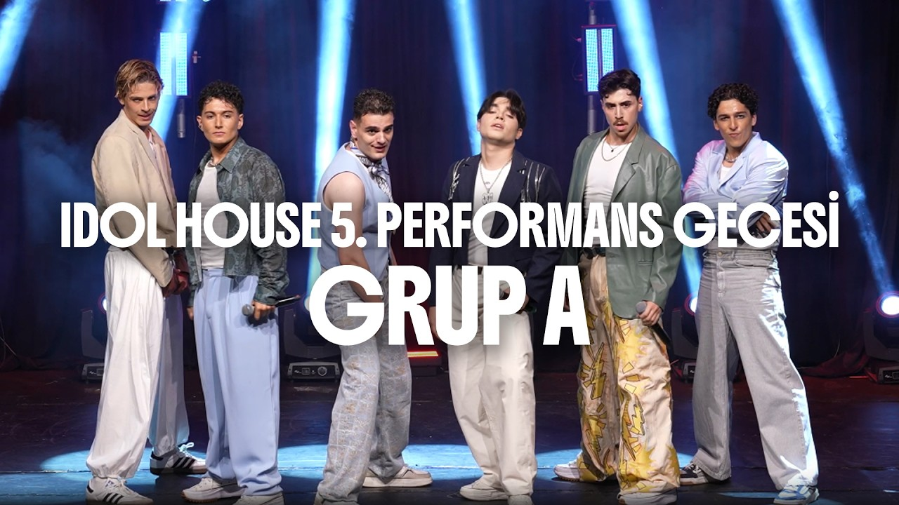
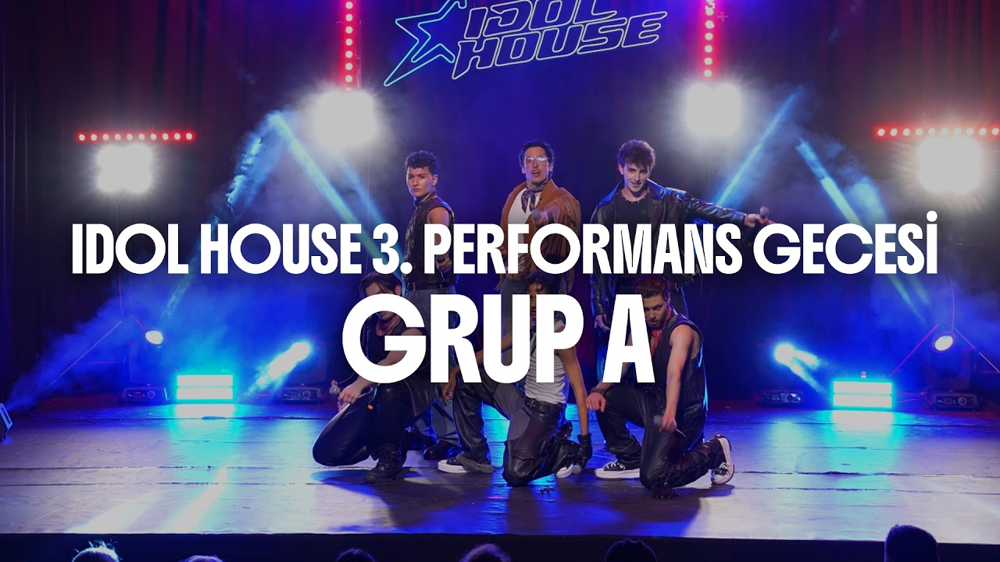
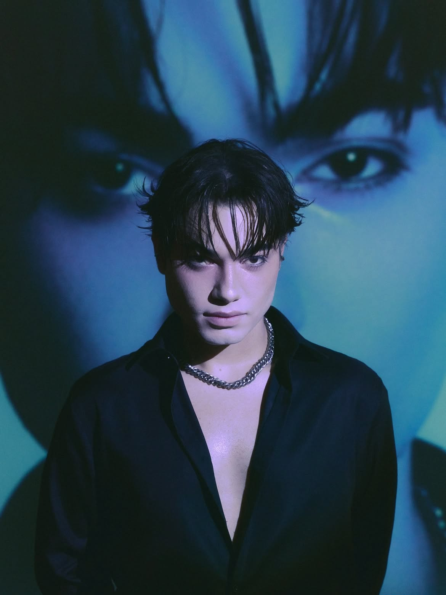
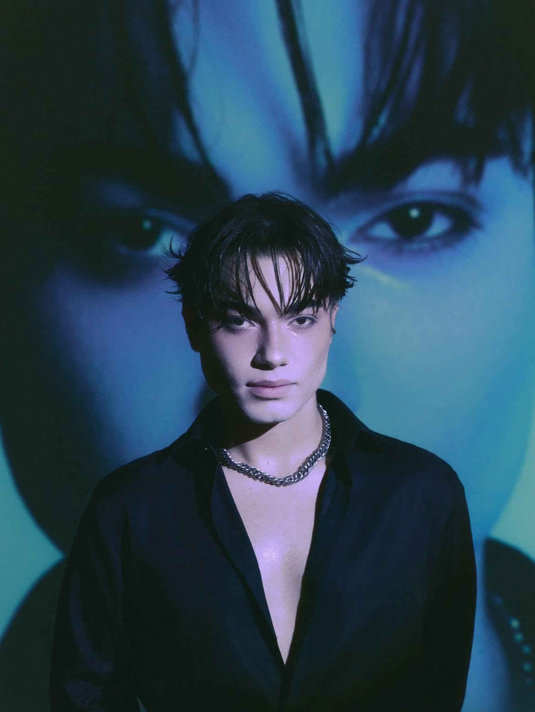
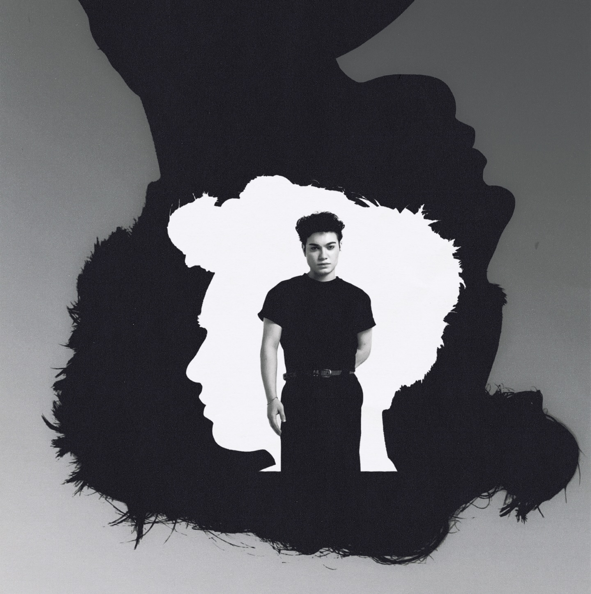
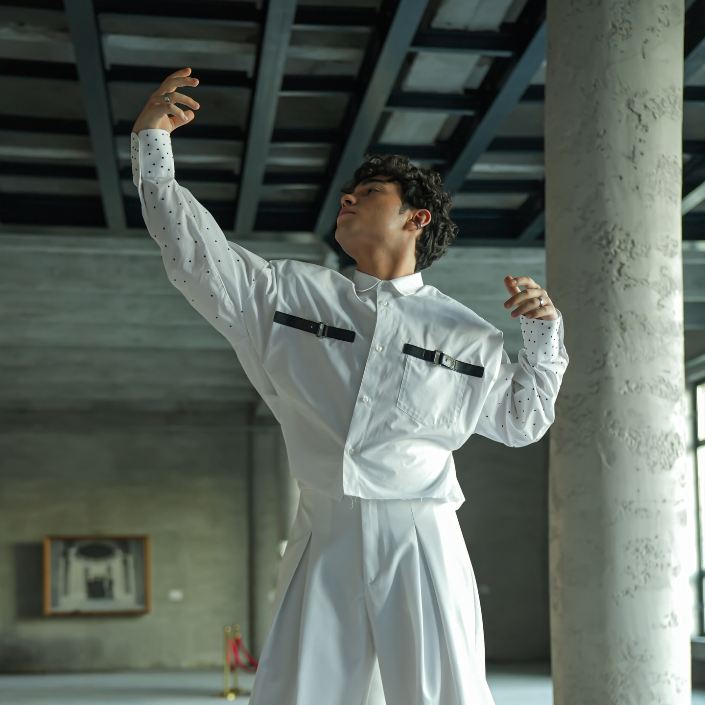

PERFORMANSLAR

▶
FE!n (Final)

▶
Dracula (Final)

▶
Assesment 2
▶
Öyle Bir Geçer Zaman Ki

▶
Çakkıdı

▶
11 Nisan 2004’te İstanbul’da doğan Miraç Fırat, küçük yaşlarda K-Pop ile tanışarak sahnede olma hayali kurmaya başladı. Bu hayalinin peşinden giderek Kore’ye taşındı. Idol House’a katılmadan önce Kyungpook National University’de Sahne Sanatları eğitimi alıyordu. Yarışmanın başında yapılan auditionlarda vokalde Intermediate, dansta ise en yüksek seviye olan Upper Intermediate sınıfına seçildi. Finalde gruba 3. sıradan seçilerek CRUSH’ın üyelerinden biri oldu.







